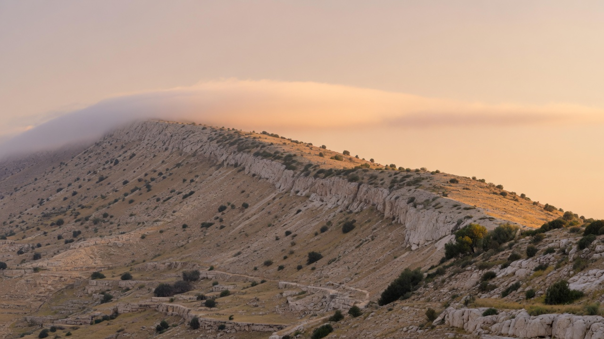
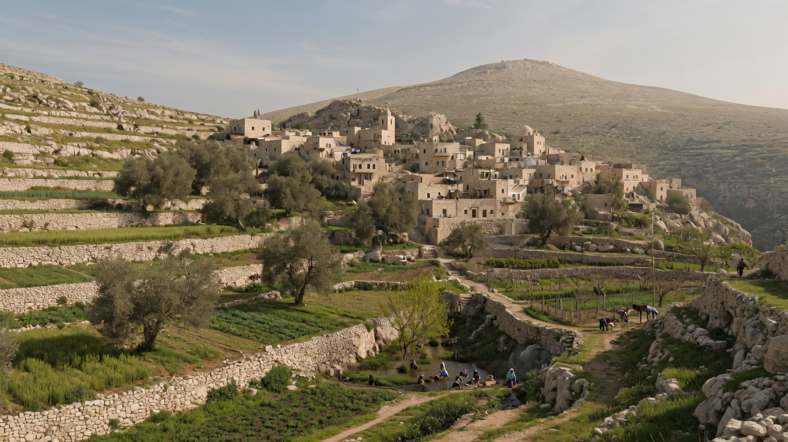
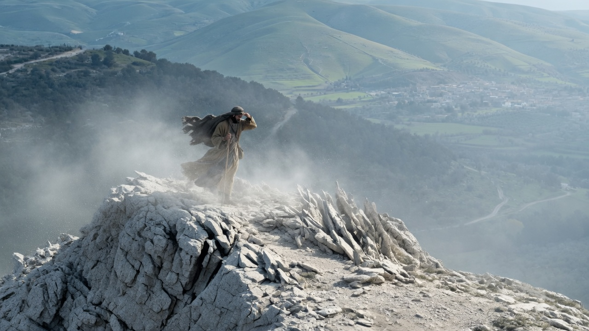
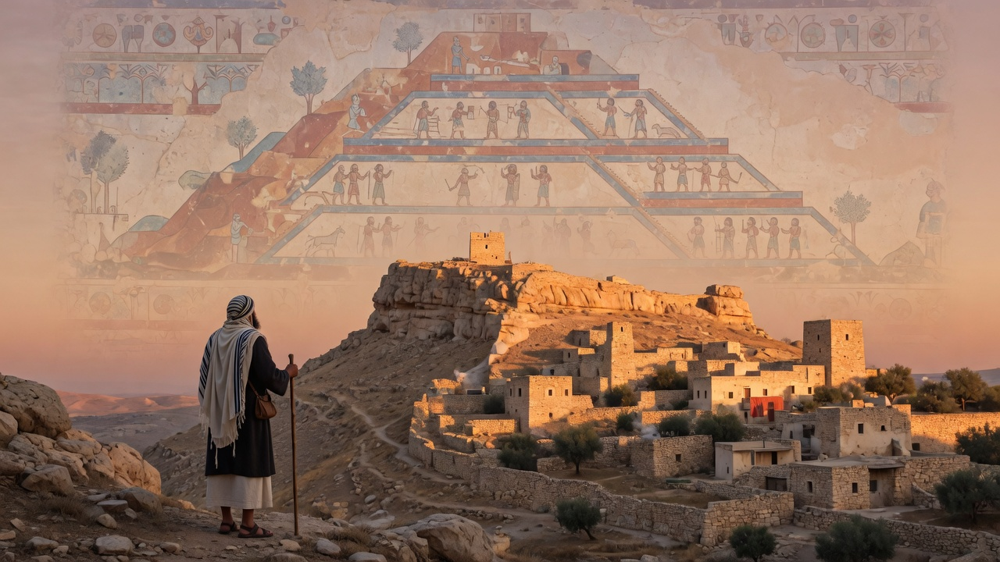
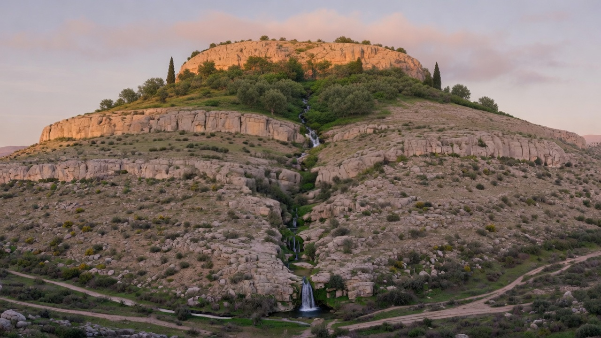
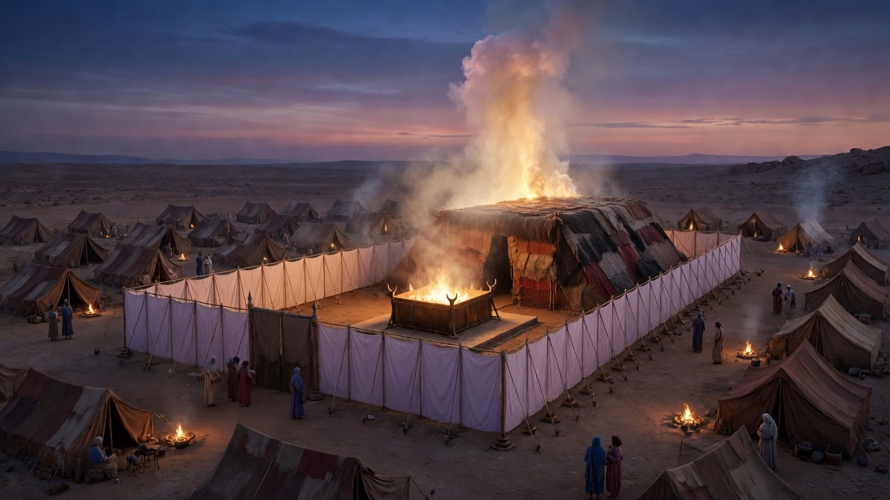
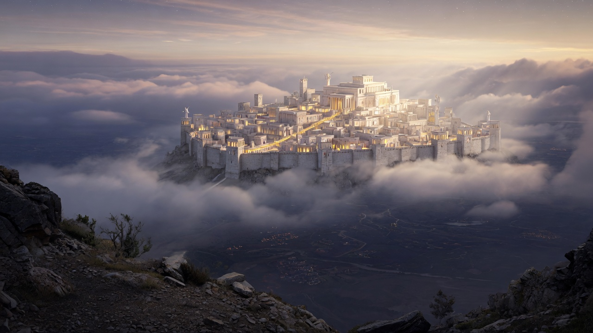

A mountain where heaven and earth meet
Most of us read the Bible's mountains as scenery. Set the scenes side by side and the pattern stops looking like coincidence: there is a mountain where heaven and earth meet, and tracing that one mountain reframes the whole story from Eden to the church.
Most of us read the Bible's mountains as scenery. Abraham binds Isaac on a mountain, Moses receives the law on a mountain, Elijah calls down fire on a mountain, Jesus is transfigured on a mountain, and we file it all under geography: dramatic things happen in dramatic places. But set the scenes side by side and the pattern stops looking like coincidence. Abraham's test in the mountains of Moriah (Genesis 22:2). Israel camped at Sinai for the entire center of the Torah, Exodus 19 through Numbers 10. The temple on Zion. The Sermon on the Mount (Matthew 5:1). The transfiguration on "a high mountain" (Matthew 17:1). The ascension from the Mount of Olives (Acts 1:9-12). And the Bible's last vision, seen from "a great, high mountain" (Revelation 21:10).
The biblical authors were not decorating their stories with impressive backdrops. Scripture keeps returning to a single idea: there is a mountain where heaven and earth meet. The Bible's many mountains are, in a real sense, one mountain, and tracing that one mountain reframes the whole story, from Eden to the church.
First, a correction of the mental image. If "mountain" makes you think of snowcapped peaks, the Bible's vocabulary will mislead you. The Hebrew word is har, and it appears roughly 560 times, covering everything from Mount Hermon, at about 9,200 feet the tallest peak on Israel's horizon, down to Jerusalem, a ridge of roughly 2,500 feet that Scripture unblushingly calls Mount Zion. One flexible word spans both. Its companions are givah, "hill" (about seventy occurrences, and the root of town names like Gibeah and Gibeon, essentially "Hilltown"), and sela, a high rock, crag, or bluff. The New Testament does the same with a single Greek word, oros, whether Jesus is on the Mount of Olives or a Galilean hillside.
The flexibility matches the terrain. Nearly the whole biblical drama plays out on a spine of hills that rises from the Mediterranean coastal plain to about 2,500 feet at Jerusalem, then plunges into the Jordan Valley toward the Dead Sea, the lowest point on land. Abraham, the judges, the kings: hill people, hill stories. So when the Bible says "mountain," it usually means high country you can live in, and only occasionally something like Sinai or Hermon that you cannot. That distinction, between the mountains you inhabit and the mountain you cannot, is where the meaning begins.

Livable high country: water, terraces, and a defensible town
In the biblical imagination the livable heights are unambiguously good, for two concrete reasons.
They are where the water is. Weather breaks against high ground; rain and snow fall on the hills and run down to everything below. So Moses describes the promised hill country as "a good land, a land of brooks of water, of fountains and springs, flowing out in the valleys and hills" (Deuteronomy 8:7). Psalm 65 opens with God at home in Zion and then, from that height, watering the earth: "the river of God is full of water" (Psalm 65:9), drenching furrows, softening the soil with showers, blessing its growth (65:10). Psalm 72 pictures the Messiah's reign as grain waving "on the tops of the mountains" (72:16). Height means water, and water means life.
They are also where safety is. The Bible's first war story ends with the survivors of Sodom and Gomorrah, down by the Dead Sea, fleeing "to the hill country" (Genesis 14:10), and the angels give Lot the same order: "flee to the mountains or you will be swept away" (19:17). The logic is military. A town on a crag with one narrow approach and a spring nearby is nearly untakeable; gravity fights for the defender. Jerusalem was chosen for exactly this: a defensible ridge above steep valleys, with a water source at its foot.
Now reread a verse you have known forever: "The LORD is my rock and my fortress... my stronghold" (Psalm 18:2). The word behind that first "rock" is sela, the crag word. David is not saying God is something solid underfoot, a firm foundation. He is saying God is the high rock you run to when armies come, the fortress-height where enemies cannot follow. It is a mountain metaphor, and it only works if you know what hills meant to people who fled to them.

Above the tree line: land, but not the human domain
So far, the heights have been friendly. Climb past the livable hills, though, and everything changes. Anyone who has stood above the tree line knows the feeling: bare rock, constant wind, thin air, nothing growing, nowhere to shelter. You can see the whole world, and none of it is yours. It is land, but not the human domain. You are a visitor, and you cannot stay. Mountains even make their own weather, wearing cloud and storm while the valleys sit in sun.
The ancient world read that feeling cosmologically, and the reasoning was intuitive. A peak is the one place where solid ground climbs up out of the human world and disappears into the sky; if heaven is above and earth below, the summit is where the two touch. Throughout the ancient Near East, Canaanite, Egyptian, and Mesopotamian alike, the highest summit was the seam of the cosmos: the meeting place of the divine and human realms, from which the waters of life flow down to the world. Biblical scholars call the idea the cosmic mountain.
And Scripture takes that idea up in plain sight. Psalm 48 hails "Mount Zion, in the far north" as "beautiful in elevation... the joy of all the earth" (Psalm 48:1-2). Read as geography, every word fails: Zion is a short ridge in Judah's south, dwarfed by the real northern peaks, Hermon and Zaphon, where Canaan seated its gods. The Hebrew there is yarketei tsaphon, "the heights of Zaphon," and some translations simply print the name. The psalmist is not confused about maps; he is seizing a title. Everything the nations claimed for their loftiest summit he plants on Yahweh's unimpressive hill, because Yahweh alone is God, creator of heaven and earth, the high places and the low. That is the biblical authors' way with their world's mountain: not swallowing their neighbors' myths whole, but retelling the mountain around the true God. Everything that follows is that retelling.

Seizing a title: Zion claims what the nations said of their loftiest summit (Psalm 48:1-2)
Watch where the Bible starts. Genesis never states outright that Eden sits on a mountain, but it leaves the clues in the geography: a single river flows out of Eden and divides into four headwaters that water the surrounding lands (Genesis 2:10-14), and rivers only run downhill. Eden is the source-height of the world. Then Ezekiel says it plainly, calling Eden "the garden of God" and locating it on "the holy mountain of God" (Ezekiel 28:13-14). The story of the Bible begins with humanity at home on the cosmic mountain, living at the overlap of heaven and earth, beside the source of life's waters. Which means the exile eastward out of the garden (Genesis 3:24) is a descent, and the rest of the Bible is the long quest back up the mountain.

Eden as source-height: a river flows out of the garden (Genesis 2:10; Ezekiel 28:13-14)
This is why the mountains rhyme. Abraham's test resolves "on the mountain of the LORD," where "it will be provided" (Genesis 22:14). Moses climbs into the cloud on Sinai for forty days (Exodus 24:18). Centuries later, Elijah's fire falls on Carmel, whose very name is the Hebrew word for an orchard or cultivated garden, and then he walks "forty days and forty nights" to Horeb, the mountain of God, retracing Moses' steps (1 Kings 19:8). Different peaks, one mountain: each a stage for the same drama of God and humanity meeting.
The hinge of the whole theme comes at Sinai. Moses ascends into the cloud that swallows the summit and stands, for forty days, where heaven and earth are one (Exodus 24:15-18). But the point of the ascent is not the view. Twice he is told: build what you saw. "See that you make them according to the pattern shown you on the mountain" (Exodus 25:40; also 25:9). The tabernacle is a copy of the summit, a tent-sized, portable cosmic mountain that travels with Israel through the wilderness. Whatever Moses experienced at the peak, God's realm and the human realm made one, is deliberately brought down and pitched at ground level, in the middle of the camp.

A portable summit: the glory rests on the tent in the middle of the camp (Exodus 25:9, 40)
Follow the tent and you can watch the mountain move. It comes to rest on Zion, a modest ridge with no natural claim to cosmic status, and precisely then Zion becomes God's holy mountain: "the LORD has chosen Zion... 'This is my resting place forever'" (Psalm 132:13-14). Elevation did not make Zion the mountain of God; residence did. And the pattern runs looser still. Jacob, asleep on ordinary ground with a rock for a pillow, wakes from his vision of the stairway crying, "the LORD is in this place, and I did not know it... this is the gate of heaven" (Genesis 28:16-17). The creator of high and low can open the overlap anywhere.
That is the key that unlocks the strangest claim in the Gospels. When Jesus says, "destroy this temple, and in three days I will raise it up," John explains that "he was speaking of the temple of his body" (John 2:19-21). If the temple is the built model of the cosmic mountain, the claim decodes precisely: Jesus is the place where heaven and earth overlap, in person. The mountain now walks around Galilee. And the apostles extend the claim to everyone joined to him: "you are God's temple and... God's Spirit dwells in you" (1 Corinthians 3:16), and the "you" is plural; in the Messiah, believers "are being built together into a dwelling place for God" (Ephesians 2:22).
Feel the size of that move. What the nations reserved for one forbidding summit at the edge of the world, and what Israel itself once located behind the veil of one building on one ridge, the New Testament says is available wherever the Messiah's people pray and gather. An ordinary assembly on an ordinary morning is standing where Moses stood.
This also explains the odd geometry of the Bible's last vision. John is carried "to a great, high mountain," exactly where Ezekiel was set down to see his vision of the restored temple-city, with its river flowing out to heal the land (Ezekiel 40:2; 47:1-12). But from that summit John watches the holy city "coming down out of heaven from God" (Revelation 21:2, 10). The direction is the point, and it is the trajectory of the entire story. Humanity never scales the cosmic mountain by effort; God keeps bringing the summit down. Down to a tent, down to a ridge in Judah, down into a human body, down into a people, and at last down for good, when God's dwelling is with humanity and the whole earth becomes the overlap (Revelation 21:3). The story that began with exile from the mountain of Eden ends with the mountain coming home to us.

Coming down out of heaven from God (Revelation 21:2, 10)